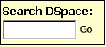
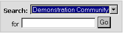
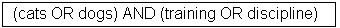
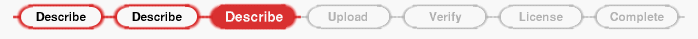
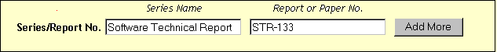
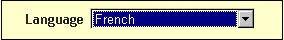
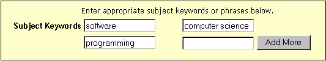

Conteúdo da Ajuda:
Navegue
Pesquisa
Pesquisa avançada
Pesquisa de Categoria de Assunto
Comunidades
Coleções
Inicie sessão no DSpace
Enviar
Formatos de arquivo
identifica
Meu DSpace
Editar perfil
Assine os alertas de e-mail
& nbsp;
O DSpace captura, distribui e preserva produtos de pesquisa digital. Aqui você pode encontrar artigos, documentos de trabalho, pré-impressões, relatórios técnicos, artigos de conferência. e conjuntos de dados em vários formatos digitais. O conteúdo cresce diariamente como novas comunidades e coleções são adicionadas ao DSpace.
O conteúdo do DSpace está organizado em torno de comunidades que podem corresponder a entidades administrativas, como escolas, departamentos, laboratórios e centros de pesquisa. Dentro de cada comunidade, pode haver uma subcomunidades de números ilimitados e um número ilimitado de coleções. Cada coleção pode conter um número ilimitado de itens.
Procurar permite que você percorra uma lista de itens em alguma ordem especificada:
Procurar por Comunidade / Coleção leva você através das comunidades em ordem alfabética ordenar e permitir que você veja as subcomunidades e coleções dentro de cada comunidade.
Procurar por Título permite que você percorra uma lista alfabética de todos os títulos de itens no DSpace.
Procurar por Autor permite que você percorra uma lista alfabética de todos os autores de itens no DSpace.
Procurar por Assunto permite que você percorra uma lista alfabética de assuntos atribuídos a itens no DSpace.
Procurar por data permite que você percorra uma lista de todos os itens no DSpace em ordem cronológica inversa.
Você pode assinar no sistema se você:
- deseja assinar uma coleção e receber atualizações de e-mail quando novos itens são adicionados
- deseja ir para o & quot; My DSpace & quot; página que rastreia suas assinaturas e outras interações com DSpace que requer autorização (se você é um remetente para uma coleção, por exemplo.)
- deseja editar seu perfil
Enviar é o DSpace função que permite aos usuários adicionar um item ao DSpace. O processo de submissão inclui preencher informações sobre o item em um formulário de metadados e fazer o upload o (s) arquivo (s) que compreende o item digital. Cada comunidade define sua própria submissão política.
Meu DSpace é um pessoal página mantida para cada membro. Esta página pode conter uma lista de itens que estão no processo de submissão para um membro específico, ou uma lista de tarefas de itens que precisam de atenção, como edição, revisão ou verificação. No futuro Esta página também manterá informações sobre serviços pessoais oferecidos por DSpace, como notificação por e-mail quando novos itens são adicionados a uma coleção.
Editar perfil permite você deve alterar sua senha.
Sobre leva você a informações sobre o projeto DSpace e seu desenvolvimento.
Para pesquisar todo o DSpace, use a caixa de pesquisa amarela na parte superior da barra de navegação à esquerda (ou a caixa de pesquisa no meio da página inicial)

Para limitar sua pesquisa para uma comunidade ou coleção específica, navegue até aquela comunidade ou coleção e use a barra de pesquisa nessa página.

O DSpace usa o Jacarta Lucene motor de busca. Aqui estão algumas sugestões de pesquisa:
O que é pesquisado em a pesquisa geral por palavras-chave (caixa amarela)
A (s) palavra (s) que você insere na caixa de pesquisa serão pesquisadas contra o título, Autores, temas resumidos, séries, patrocinadores e identificadores de cada item registro.Se o seu site estiver habilitado para pesquisa de texto completo, o texto que você digitou também será procurou contra o texto completo de todos os documentos arquivados. Para mais informações sobre texto completo procurando, entre em contato seu administrador do DSpace .
O que não foi pesquisado - Parar Palavras
O mecanismo de pesquisa ignora certas palavras que ocorrem freqüentemente em Inglês, mas não adicione valor à pesquisa. Estes são:"a", "e" "são", "como", "at", "ser", "mas", "por", "para", "se", "dentro", "dentro", "
"is", "it" "não", "não", "de", "ligado", "ou", "tal", "o", "para", "foi"
Truncamento
Use um asterisco (*) após um tronco da palavra para obter todos os hits com as palavras começando com essa raiz, por exemplo:
& nbsp; & nbsp; irá recuperar seleções, seletor, selecionador, selecionando.
Símbolo
O mecanismo de busca expande automaticamente palavras com terminações comuns para incluir plurais, tempos passados ... etc.Pesquisa de Frases
Para pesquisar usando várias palavras como uma frase, coloque aspas ("quot;)" em torno de a frase.

Correspondência de palavras exatas
Coloque um sinal de mais (+) antes de uma palavra se DEVE aparecer no resultado da pesquisa. Por exemplo, na busca a seguir, a palavra treinamento & quot; é opcional, mas a palavra "cão" deve estar no resultado.
Elimine itens com palavras indesejadas
Coloque um sinal menos (-) antes de uma palavra se não aparecer na pesquisa resultados. Alternativamente, você pode usar NOT . Isso pode limitar sua pesquisa para eliminar sucessos indesejados. Por exemplo, na pesquisa
& nbsp; ou & nbsp;
você receberá itens que contenham a palavra "treinamento", exceto aqueles que também contêm a palavra "gato".
pesquisa booleana
O Booleano a seguir Os operadores podem ser usados para combinar termos. Note que eles devem ser CAPITALIZADOS !
E - para limitar procura encontrar itens que contenham todas as palavras ou frases combinadas com isso operador, por exemplo.
irá recuperar todos os itens que contenham ambas as palavras "gatos" e & quot; dogs & quot;.
OR - para ampliar procura localizar itens que contenham alguma das palavras ou frases envolvendo este operador
irá recuperar todos os itens que contêm EITHER as palavras & gatos & quot; ou & quot; dogs & quot;.
NOT - para excluir itens contendo a palavra seguindo este operador, e.
irá recuperar todos os itens que contenham a palavra & quot; training & quot; EXCETO aqueles contendo também a palavra "gato".
Parênteses podem ser usados na consulta de pesquisa para agrupar termos de pesquisa em conjuntos, e os operadores podem então ser aplicado a todo o conjunto, por exemplo,

| ADVANCED SEARCH | top |
The advanced search page allows you to specify the fields you wish to search, and to combine these searches with the Boolean "and", "or" or "not".
You can restrict your search to a community by clicking on the arrow to the right of the top box. If you want your search to encompass all of DSpace, leave that box in the default position.
Then select the field to search in the left hand column and enter the word or phrase you are searching in the right hand column. You can select the Boolean operator to combine searches by clicking on the arrow to the right of the "AND" box.
Note: You must use the input boxes in order. If you leave the first one blank your search will not work.
| SUBJECT CATEGORY SEARCH | top |
A controlled vocabulary is a set of terms which form a dictionary of descriptions of particular types of content or subject matter. These are maintained by standards bodies in order to standardise the way that similar materials are categorised in archives. This aids searching by increasing the likelihood that the relevant materials will be returned by the user's search.
Filtering the category list will remove from the list any terms which do not match the filter. The remaining terms are any category or sub category which contains the filter term anywhere in the heirarchy. Expanding each category will show you which terms (or sub terms) did match the filter.
To search the archive items by the subject category, check as many boxes next to the categories as necessary, before clicking "Search...". The search will return all items that either match the categories selected exactly, or which are categorised underneath a higher level category. Clicking on the "+" next to the category will expand the tree to show you what refinements are available for your selected category.
| COMMUNITIES | top |
The DSpace content is organized around Communities which can correspond to administrative entities such as schools, departments, labs and research centers. Within each community there can be an unlimited number subcommunities and an unlimited number of collections. Each collection may contain an unlimited number of items. This organization gives DSpace the flexibility to accommodate differing needs of communities by allowing them to
- Decide on policies such
as:
- - who contributes content- - whether there will be a review process- - who will have access
- Determine workflow - reviewing, editing, metadata
- Manage collections
Each community has its own entry page displaying information, news and links reflecting the interests of that community, as well as a descriptive list of collections within the community.
| COLLECTIONS | top |
Communities can maintain an unlimited number of collections in DSpace. Collections can be organized around a topic, or by type of information (such as working papers or datasets) or by any other sorting method a community finds useful in organizing its digital items. Collections can have different policies and workflows.
Each DSpace collection has its own entry page displaying information, news and links reflecting the interests of users of that collection.
| SIGN ON TO DSPACE | top |
When you access an area of DSpace that requires authorization, the system will require you to log in. All users can register to become subscribers. Some restricted functions, such as content submission, require authorization from the community
Before you log in for the first time, you will need to click on "register with DSpace" and follow the instructions. After that, you will need to enter your e-mail address and password in the log-in form that appears. Your e-mail address should include your username and domain name. It is not case sensitive.
Example: moniker@mycorp.com
Type your password exactly as you entered it originally. It is case sensitive. Be sure to click on the "log in" button to continue.
| SUBMIT | top |
Stopping during the Submission Process:
At any point in the submission process you can stop and save your work for a later date by clicking on the "cancel/save" button at the bottom of the page. The data you have already entered will be stored until you come back to the submission, and you will be reminded on your "My DSpace" page that you have a submission in process. If somehow you accidentally exit from the submit process, you can always resume from your "My DSpace" page. You can also cancel your submission at any point.
Progress Bar - Oval Buttons at Top of Page:
At the top of the submit pages you will find 7 oval buttons representing each step in the submission process. As you move through the process these ovals will change color. Once you have started you can also use these buttons to move back and forth within the submission process by clicking on them. You will not lose data by moving back and forth.

Select Collection:
Click on the arrow at the right of the drop-down box to see a list of Collections. Move your mouse to the collection into which you wish to add your item and click.
(If you are denied permission to submit to the collection you choose, please contact your DSpace Administrator for more information.)
You must be authorized by a community to submit items to a collection. If you would like to submit an item to DSpace, but don't see an appropriate community, please contact your DSpace Administrator to find out how you can get your community set up in DSpace.
Click on the "next" button to proceed, or "cancel/save" button to stop and save or cancel your submission.
| SUBMIT: Describe Your Item - Page 1 | top of submit | top |
If you respond "yes" to any of the questions on this page, you will be presented with a modified input form tailored to capture extra information. Otherwise you will get the "regular" input form.
* More than one title - Sometimes an item has more than one title, perhaps an abbreviation, acronym, or a title in another language. If this is the case, and you want this information captured, click in the "yes" box.
* Previously issued - New items that have NOT been previously published or distributed will be assigned an issue date by the system upon DSpace distribution. If you are entering older items that have already been distributed or published, click in the "yes" box. You will receive a form prompting you for several pieces of information relating to publication.
* Multiple files - An item can consist of more than one file in DSpace. A common example of this would be an HTML file with references to image files (such as JPG or GIF files). Another example of this would be an article supplemented with a video simulation and a data file. If you are submitting more than one file for this item, click in the "yes" box.
Click on the "next" button to proceed, or "cancel/save" button to stop and save or cancel your submission.
| SUBMIT: Describe Your Item - Page 2 | top of submit | top |
The information you fill in on these two screens will form the metadata record that will enable users to retrieve your item using search engines. The richer the metadata, the more "findable" your item will be, so please take the time to fill in as many fields as are applicable to your item.
Author:
This can be a person, organization or service responsible for creating or contributing to the content of the item. By clicking on the "Add More" button you can add as many authors as needed. Examples:
If the author is an organization, use the last name input box for the organization name:
Title:
Enter the full and proper name by which this item should be known. All DSpace items must have a title!
Other Title: (note - this input box appears only if you indicated on the first page that the item has more than one title.)If your item has a valid alternative title, for instance, a title in another language or an abbreviation, then enter it here. Example:
Date of Issue: (note - this input box appears only if you indicated on the first page that the item has been previously published or distributed. If DSpace is the first means of distribution of this item, a date will be assigned by the system when the item becomes a part of the repository.)
If your item was previously published or made public, enter the date of that event here. If you don't know the month, leave the default "no month"; otherwise select a month from the drop-down box. If you don't know the exact day, leave that box empty.
Publisher: (note - this input box appears only if you indicated on the first page that the item has been previously published or distributed.)
Enter the name of the publisher of this item.
Citation: (note - this input box appears only if you indicated on the first page that the item has been previously published or distributed.)
Enter citation information for this item if it was a journal article or part of a larger work, such as a book chapter. For journal articles, include the journal title, volume number, date and paging.
For book chapters, include the book title, place of publication, publisher name, date and paging.
Series/Report No.:
Some of the collections in DSpace are numbered series such as technical reports or working papers. If this collection falls into that category, then there should be a default value in the Series Name box which you should not change, but you will have to fill in the assigned number in the Report or Paper No. input box. Examples:

Identifiers:
If you know of a unique number or code that identifies this item in some system, please enter it here. Click on the arrow to the right of the input box, and select from one of the choices in the drop down menu. The choices refer to:
Govt.doc # - Government Document Number - e.g. NASA SP 8084
ISBN - International Standard Book Number - e.g. 0-1234-5678-9
ISSN - International Standard Serial Number - e.g. 1234-5678
ISMN - International Standard Music Number - e.g. M-53001-001-3
URI - Universal Resource Identifier - e.g.. http://www.dspace.org/help/submit.html
Other - An unique identifier assigned to the item using a system other than the above
Type:
Select the type of work (or genre) that best fits your item. To select more than one value in the list, you may have to hold down the "ctrl" or "shift" key.
Language:
Select the language of the intellectual content of your item. If the default (English - United States) is not appropriate, click on the arrow on the right of the drop down box to see a list of languages commonly used for publications, e.g.

If your item is not a text document and language is not applicable as description, then select the N/A choice.


Click on the "next" button to proceed, or "cancel/save" button to stop and save or cancel your submission.
| SUBMIT: Describe Your Item - Page 3 | top of submit | top |
Subject/Keywords:
Please enter as many subject keywords as are appropriate to describe this item, from the general to the specific. The more words you provide, the more likely it is that users will find this item in their searches. Use one input box for each subject word or phrase. You can get more input boxes by clicking on the "add more" button. Examples:

Your community may suggest the use of a specific vocabulary, taxonomy, or thesaurus. If this is the case, please select your subject words from that list. Future versions of DSpace will provide links to those lists.
Abstract:
You can either cut and paste an abstract into this box, or you can type in the abstract. There is no limit to the length of the abstract. We urge you to include an abstract for the convenience of end-users and to enhance search and retrieval capabilities.
Sponsors:
If your item is the product of sponsored research, you can provide information about the sponsor(s) here. This is a freeform field where you can enter any note you like. Example:
Description:
Here you can enter any other information describing the item you are submitting or comments that may be of interest to users of the item.

Click on the "next" button to proceed, or "cancel/save" button to stop and save or cancel your submission.
| SUBMIT: Controlled Vocabulary | top of submit | top |
A controlled vocabulary is a set of terms which form a dictionary of descriptions of particular types of content or subject matter. These are maintained by standards bodies in order to standardise the way that similar materials are categorised in archives.
Accurately categorising material using a controlled vocabulary increases the likelihood that relevant results will be returned to users when searching individual or multiple archives.
To enter a controlled vocabulary term in the form, select "Subject Categories" from underneath the input field. This will open a window containing the available vocabularies. You may filter the vocabulary lists as described above in order to find the terms most relevant to your submission. Once you have found the term that you wish to enter, simply click on it, and it will be automatically entered into the submission form and the popup window will close. You may add as many subject category terms as you like into the form. Use "Add More" on the right to generate more input boxes.
Filtering the category list will remove from the list any terms which do not match the filter. The remaining terms are any category or sub category which contains the filter term anywhere in the heirarchy. Expanding each category will show you which terms (or sub terms) did match the filter.
| SUBMIT: Upload a File | top of submit | top |
There are two methods of entering the name of the file you wish to upload:
-
Type the full path and file name into the input box and then click on the "next" button in the lower right hand corner of the screen.
-
Click on the "browse" button and a window showing your files will appear. You can navigate through your directories and folders until you find the correct file to upload. Double-click on the file name you wish to upload, and the name will be entered into the input box.
Once the correct file name is in the input box, click on the "next" button to proceed.
If you specified at the beginning of the submit process that you had more than one file to upload for this item, you will see an input box marked "File Description". The information you provide here will help users to understand what information is in each file, for instance, "main article" or "images" or "computer program" or "data set". Enter file descriptions for each item, and click on the "next" button to proceed.
| SUBMIT: File Formats | top of submit | top |
To properly archive and give access to a file, we need to know what format it is, for example "PDF", "HTML", or "Microsoft Word". If the system does not automatically recognize the format of the file you have uploaded, you will be asked to describe it. If the format of the file appears in the list offered, click on it and then on "Submit". If you can't see the format in the list, click on "format not in list" and describe the format in the text box lower down on the page. Be sure to give the name of the application you used to create the file and the version of that application, for example "Autodesk AutoCAD R20 for UNIX".
For more information about file formats, see DSpace Supported Formats.
After you have uploaded a file, check the information in the table to make sure it is correct. There are two further ways to verify that your files have been uploaded correctly:
- Click on the filename. This will download the file in a new browser window, so that you can check the contents.
- Compare the file checksum displayed here with the checksum you calculate.
If you're only uploading one file, click on "Next" when you're happy that the file has been uploaded correctly.
If you're uploading more than one file, click on the "Add Another File" button (this will appear if you checked "The item consists of more than one file" on the "Submit: Describe Your Item" page). When you are satisfied that all files for this item have been successfully uploaded, click on the "Next" button.
If you're uploading an HTML page with embedded files, click on the "Add Another File" button, and upload all files or bitstreams referenced in the html page. After all the are uploaded, in the column marked "Primary Bitstream", select the bitstream or file that is the index page or the top page for the web page. This will ensure that all of your embedded files will display properly on the HTML page. Then click on the "Next" button.
DSpace generates an MD5 checksum for every file it stores; we use this checksum internally to verify the integrity of files over time (a file's checksum shouldn't change). You can use this checksum to be sure what we've received is indeed the file you've uploaded.
If you wish to verify the file using checksums, click "Show checksums" on the "Uploaded File" page. The DSpace-generated MD5 checksum for every file we've received from you will show to the right of the filename. You will then need to use a local program to generate your own checksum for these files, and verify that your results match ours. On most UNIX-like systems (including Mac OS X), use md5sum. For instance, type "md5sum MYFILE" for every file you want to check; the summary should print on your screen. For Windows machines, MD5 tools are freely available: try md5 (from http://www.fourmilab.ch/md5/), or md5sum, available via the textutils package in Cygwin (http://www.cygwin.com/). All of these utilities will need to be run from a command-line, or terminal, window. The entire digest printed out when you run the md5 tool on your local copy of the file you're uploading should be exactly equal to what DSpace reports.
| SUBMIT: Verify Submission | top of submit | top |
This page lets you review the information you have entered to describe the item. To correct or edit information, click on the corresponding button on the right, or use the oval buttons in the progress bar at the top of the page to move around the submission pages. When you are satisfied that the submission is in order, click on the "Next" button to continue.
Click on the "Cancel/Save" button to stop and save your data, or to cancel your submission.
| SUBMIT: License | top of submit | top |
DSpace requires agreement to this non-exclusive distribution license before your item can appear on DSpace. Please read the license carefully. If you have any questions, please contact your DSpace Administrator.
| SUBMIT: Submission Complete | top of submit | top |
Now that your submission has been successfully entered into the DSpace system, it will go through the workflow process designated for the collection to which you are submitting. Some collections require the submission to go through editing or review steps, while others may immediately accept the submission. You will receive e-mail notification as soon as your item has become a part of the collection, or if for some reason there is a problem with your submission. If you have questions about the workflow procedures for a particular collection, please contact the community responsible for the collection directly. You can check on the status of your submission by going to the My DSpace page.
| HANDLES | top |
When your item becomes a part of the DSpace repository it is assigned a persistent URL. This means that, unlike most URLs, this identifier will not have to be changed when the system migrates to new hardware, or when changes are made to the system. DSpace is committed to maintaining the integrity of this identifier so that you can safely use it to refer to your item when citing it in publications or other communications. Our persistent urls are registered with the Handle System, a comprehensive system for assigning, managing, and resolving persistent identifiers, known as "handles," for digital objects and other resources on the Internet. The Handle System is administered by the Corporation for National Research Initiatives (CNRI), which undertakes, fosters, and promotes research in the public interest.
| MY DSPACE | top |
If you are an authorized DSpace submitter or supervisor, or if you are a staff member responsible for DSpace collection or metadata maintenance, you will have a My DSpace page. Here you will find:
- a list of your in-progress submissions - from this list you can resume the submission process where you left off, or you can remove the submission and cancel the item.
- a list of the submissions which you are supervising or collaborating on
- a list of submissions that are awaiting your action (if you have a collection workflow role).
- a link to a list of items that you have submitted and that have already been accepted into DSpace.
| EDIT PROFILE | top |
This page allows you to change the information we have for you. You must be authenticated with your log-in to change any of your personal information.
| SUBSCRIBE TO E-MAIL ALERTS | top |
Users can subscribe to receive daily e-mail alerts of new items added to collections. Users may subscribe to as many collections as they wish. To subscribe:
- go to the DSpace registration page by clicking on the sign-on link in the navigation bar on the left of the home page
- fill out the registration form
- navigate to a collection for which you would like to receive e-mail alerts, and click on the "subscribe" button (repeat for other collections)
- to edit your subscriptions, go to the "Subscribe" page.
FOR FURTHER ASSISTANCE... |
top |
For help with using DSpace and questions about your specific site, please contact your DSpace Administrator.
For general information and news about DSpace, visit the DSpace Website.
Contents | Browse | Search | Communities | Collections | Submit | File Formats | My DSpace | Edit Profile | Subscribe to E-mail alerts